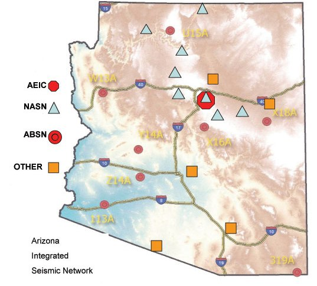
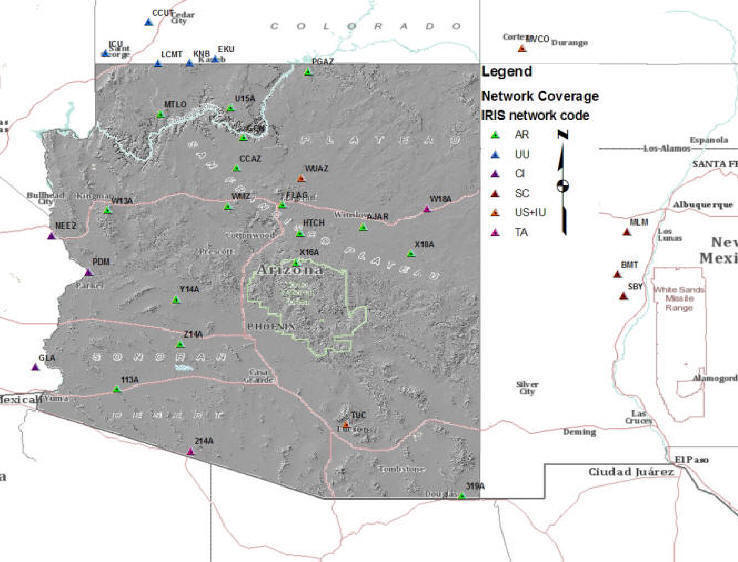

Arizona Seismic Monitoring
Earthquake monitoring in the state of Arizona occurs at a number of seismograph stations throughout the state. Most of these stations are maintained by two seismograph networks: the Northern Arizona Seismograph Network (NASN) and the ABSN or Arizona Broadband Seismograph Network (see map below). These two networks are members of a cooperative statewide network called the Arizona Integrated Seismic Network (AISN) whose common purpose is to collect, distribute, and do research on earthquakes occurring in the state of Arizona. The NASN is supported and maintained by the Arizona Earthquake Information Center at Northern Arizona University in Flagstaff. The ABSN is maintained cooperatively by the Arizona Information Center and the Arizona Geological Survey, and supported by the Survey, Arizona Division of Emergency Management, and the three state Universities.

Additionally, monitoring for events within Arizona utilizes stations from neighboring networks in Utah-UU, California-CI, Colorado-US, New Mexico-SC and reference stations from the National Network-US and IU and Transportable Array-TA network stations. These include stations at Wupatki National Monument, Petrified Forest National Monument, Organ Pipe Cactus National Monument, and the University of Arizona. Together these seismograph stations provide broad and continuing coverage of earthquake activity across the state of Arizona.
